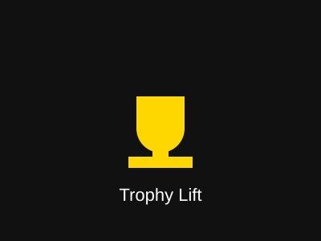
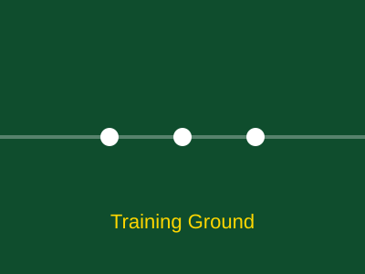
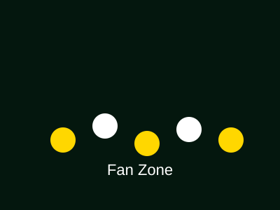
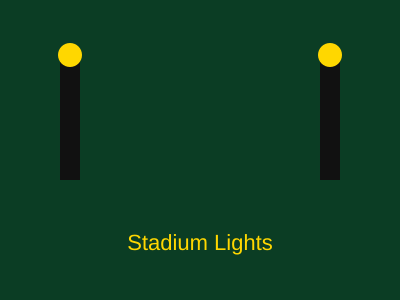
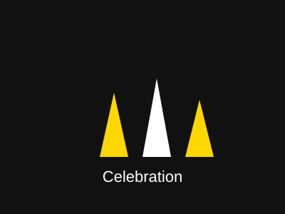

Modern Football Analytics
Every Match. Every Stat. One Dashboard.
Footy Stats turns raw football numbers into stories you can actually use — track your favourite players, compare form, and follow the league table as it changes matchweek by matchweek.
0
Matches Tracked
0
Teams
0
Players
0
Goals Scored
Latest Matches
Rate each match out of 5 stars — your ratings are saved in this browser.
Loading matches…
Player Statistics
Search for any player to see their season numbers.
| Player | Position | Team | Apps | Goals | Assists | Favourite |
|---|---|---|---|---|---|---|
| Loading players… | ||||||
No players match your search.
League Table
Current standings for the Footy Stats Youth League.
| # | Team | P | W | D | L | GD | Pts |
|---|---|---|---|---|---|---|---|
| Loading table… | |||||||
Top Players
Filter by position to find the league's best.
Loading top players…
Gallery
Moments from the season so far.






About Footy Stats
Footy Stats is a student-built demo project that shows how a real football analytics website could work — using nothing but HTML, CSS and JavaScript. There's no server and no database here; every match, player and table row you see is just sample data stored directly in our JavaScript file.
The goal is to practise the exact same building blocks that power huge real-world sites: semantic markup, responsive layout, and small, readable scripts that respond to what a visitor does.
Built for learning
Every line of code here is written to be explained, not hidden behind a framework.
Works everywhere
Designed mobile-first, so it looks great on a phone, tablet or laptop.
Contact Us
Questions, feedback, or spotted a stat that looks wrong? Send us a message.